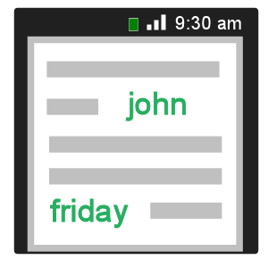

Slate templates allow you to easily create native mobile user interfaces using a templating system. Think of it a hybrid between markdown + templating for mobile.
|
|
|
|
 |
template |
+ |
data |
= |
native mobile UI |
Slate templates allow you to easily create native mobile user interfaces using a templating system. Think of it a hybrid between markdown + templating for mobile.
| | 33 % less than xml |
| | dynamic loading |
| | generates native mobile UI |
 | available for android |
 | available for windows |
| | relative widths |
| | secure templating |
| optionally use mock data |
Slate templates are NOT xml based. The syntax is similar to code. The following syntax significantly reduces the size
- Use braces { } instead on end tags
- Text, Images, Lists have support a default attribute so you can leave it out altogether
- Some attribute values which are numeric don't required being enclosed in quotes
template.core
{
// Loop through calendar and show all data for that day.
// This includes day/date/weather/first event time
@each ( day in @calendar.days limit=4 )
{
list.col3 across
{
h6.dayName @day.dayName
text6.cell @day.dayDate
img.iconwt @day.weatherImage
text6.cell @day.tempHigh
text6.cell @day.tempLow
text6.cell @day.firstEventTimeAsText
text6.cell @day.totalEventsText
text6.cell @day.totalBDaysAsText
}
}
}
This automatic page generator is the easiest way to create beautiful pages for all of your projects. Author your page content here using GitHub Flavored Markdown, select a template crafted by a designer, and publish. After your page is generated, you can check out the new branch:
| |
| android JAVA library | C# library for windows/phone |
This automatic page generator is the easiest way to create beautiful pages for all of your projects. Author your page content here using GitHub Flavored Markdown, select a template crafted by a designer, and publish. After your page is generated, you can check out the new branch:
// Yout android or windows xml or xaml layouts have
// to be in a file packaged in the app.
// So you typically load the layout like so:
View viewFromFile = inflate(R.layout.eventInfo, null);
// With slate, you can supply just a string representing
// the layout. This enables you to get layout/string from
// anywhere. Don't worry... the templates are safe / secure
// as they are mostly logic-less and can't access any
// device functionality... only data that is supplied.
// Now you can do :
View viewFromText = loadTemplate("text6 'hello world'");
This automatic page generator is the easiest way to create beautiful pages for all of your projects. Author your page content here using GitHub Flavored Markdown, select a template crafted by a designer, and publish. After your page is generated, you can check out the new branch:
template.core
{
list down
{
// Loop through calendar and show all data for that day.
// This includes day/date/weather/first event time
list across width=200
{
text 'this is 20% of parent' width='20%'
}
list across width='50%'
{
text 'list is 50% of parent'
}
}
}
This automatic page generator is the easiest way to create beautiful pages for all of your projects. Author your page content here using GitHub Flavored Markdown, select a template crafted by a designer, and publish. After your page is generated, you can check out the new branch:
// 1. define pre-processor variables
define test-data
setup
{
// 2. Only include mock data if pre-processor
// variable exists.
#if test-data
set events =
[
{ name: 'dev meeting', time: '10:00 am' },
{ name: 'dev meeting', time: '10:00 am' },
{ name: 'dev meeting', time: '10:00 am' },
{ name: 'dev meeting', time: '10:00 am' }
];
#endif
}
template.core
{
list down
{
// 3. Now use the mock data
// Note: the list 'events' can be supplied
// from code. this example is for mock data
@each( event in events )
{
text6.accent @event.name
text6.strong @event.location
}
}
}
Lets look at some sample code in android to run a template
TemplateService svc = new TemplateService();
TemplateContext ctx = new TemplateContext();
svc.setContext(ctx);
// 1. Fill the context with all the neccessary info.
// The templating engine needs the android context,
// The window manager to figure out screen dimensions
// The resources to dynamically load some files
// Finally create the data map to fill data for templates
ctx.Context = getApplicationContext();
ctx.Resources = getResources();
ctx.WindowMgr = getWindowManager();
ctx.Data = new TemplateData();
// 2. Load the theme file ( just like css )
ctx.loadTheme("theme_default.txt");
// 3. Optional : set styles
svc.setFont(Typeface.create("sans-serif-light", Typeface.NORMAL));
svc.setThemeVariable("accentColor", "#12ab23");
// 4. Put some data into template
ctx.Data.putData("firstname", "john");
ctx.Data.putData("lastname", "doe");
// 5. Now execute template and get view
svc.executeTemplate("text6 @firstname; text6 @lastname;");
Welcome to GitHub Pages.
This automatic page generator is the easiest way to create beautiful pages for all of your projects. Author your page content here using GitHub Flavored Markdown, select a template crafted by a designer, and publish. After your page is generated, you can check out the new branch:
$ cd your_repo_root/repo_name
$ git fetch origin
$ git checkout gh-pages
If you're using the GitHub for Mac, simply sync your repository and you'll see the new branch.
Designer Templates
We've crafted some handsome templates for you to use. Go ahead and continue to layouts to browse through them. You can easily go back to edit your page before publishing. After publishing your page, you can revisit the page generator and switch to another theme. Your Page content will be preserved if it remained markdown format.
Rather Drive Stick?
If you prefer to not use the automatic generator, push a branch named gh-pages to your repository to create a page manually. In addition to supporting regular HTML content, GitHub Pages support Jekyll, a simple, blog aware static site generator written by our own Tom Preston-Werner. Jekyll makes it easy to create site-wide headers and footers without having to copy them across every page. It also offers intelligent blog support and other advanced templating features.
Authors and Contributors
You can @mention a GitHub username to generate a link to their profile. The resulting <a> element will link to the contributor's GitHub Profile. For example: In 2007, Chris Wanstrath (@defunkt), PJ Hyett (@pjhyett), and Tom Preston-Werner (@mojombo) founded GitHub.
Support or Contact
Having trouble with Pages? Check out the documentation at http://help.github.com/pages or contact support@github.com and we’ll help you sort it out.